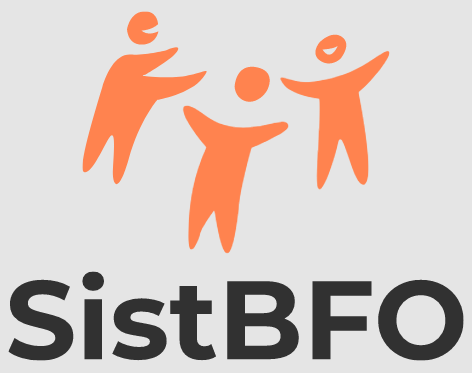

<mat-toolbar class="mat-elevation-z5">
    <a id="signin_btn" mat-button href="/dashboard" target="_self">Login</a>
    <a id="signup_btn" mat-raised-button href="#" target="_self">Cadastrar</a>
</mat-toolbar>
<div id="container">
    
</div>
<app-main-footer></app-main-footer>